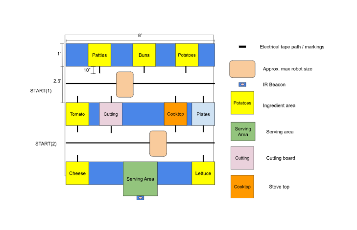
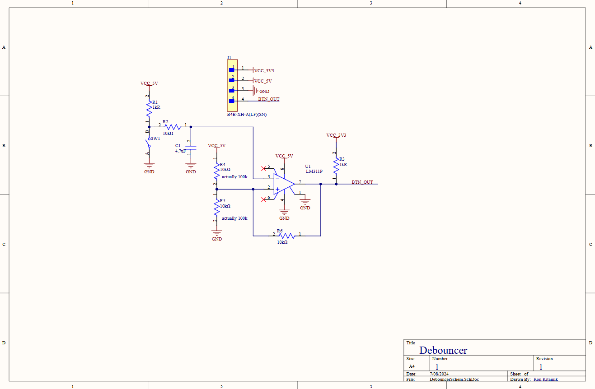
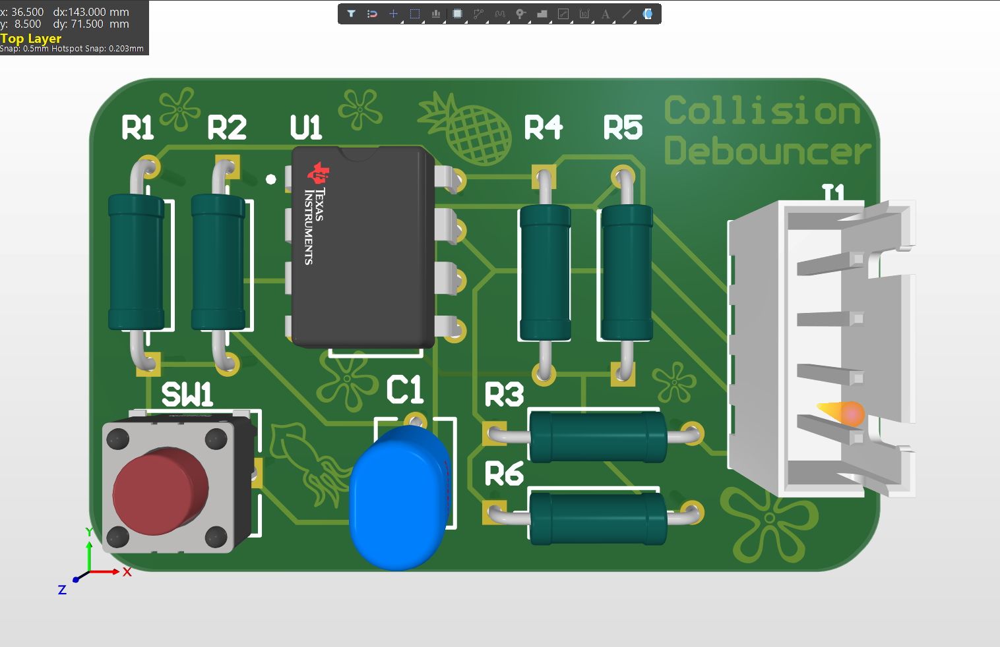

Autonomous Cooking Robots

In summer of 2024 I collaborated with three other students to build a pair of fully automatic robots that served food in a kitchen-like course.

The environment included various signals and surfaces for our robots to follow.
I developed PCBs for the robot including a phototransistor reflectance sensor, a two-motor H-bridge, and a hardware signal debouncer, shown below.

I routed the schematic and developed this small, stylized board.

(The theme is because our team name was the Krusty Krab)